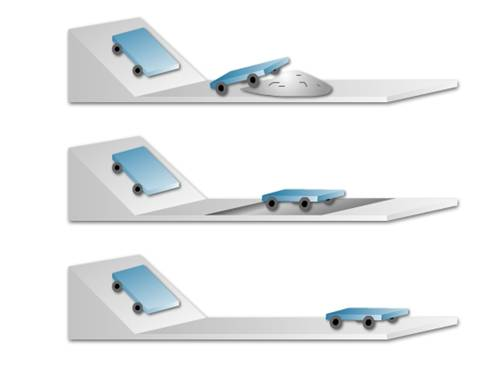

|
Что нужно для движения тела с постоянной скоростью? Долгое время общепринятой
была точка зрения, высказанная Аристотелем: если на тело не действуют другие
тела, тело находится в состоянии покоя, а для движения с постоянной скоростью
необходимо приложение постоянной силы. Впервые усомнился в этом Галилео Галилей,
который после множества опытов заключил, что для движения тела с постоянной
скоростью не нужно какой-либо внешней причины. Тщательные опыты по изучению
движения тел позволили ему установить, что если на тело не действуют другие
тела, то оно

находится или в покое, или движется прямолинейно и равномерно относительно
Земли.
Возьмем тележку и будем скатывать ее с наклонной
плоскости на дорожку с различным покрытием. Скатившись на дорожку с песком, она
очень быстро останавливается. На дорожке с толстой тканью она проходит большее
расстояние, а на стеклянной дорожке она пройдет еще большее расстояние. Значит,
чем меньше препятствие на пути тележки, тем больший путь она проходит и тем
больше это движение ближе к равномерному.
Явление сохранения скорости тела при
отсутствии действия на него других тел называют инерцией.
Инерция
— от лат. inertia — бездействие. Таким образом, движение тела при
отсутствии действия на него других тел называют движением по инерции.
Когда вы катаетесь на
велосипеде, вы сначала крутите педали, набираете скорость, а потом катитесь по
инерции. А что бы было, если явления инерции не существовало? Правильно! Как
только вы перестали бы крутить педали, велосипед вместе с вами мгновенно
остановился. А так как есть инерция, он сохраняет скорость своего движения.
Итак, если на тело не действуют другие тела, то оно
движется с постоянной скоростью.


Метки: Галилео Галилей, инерция, скорость, путь |